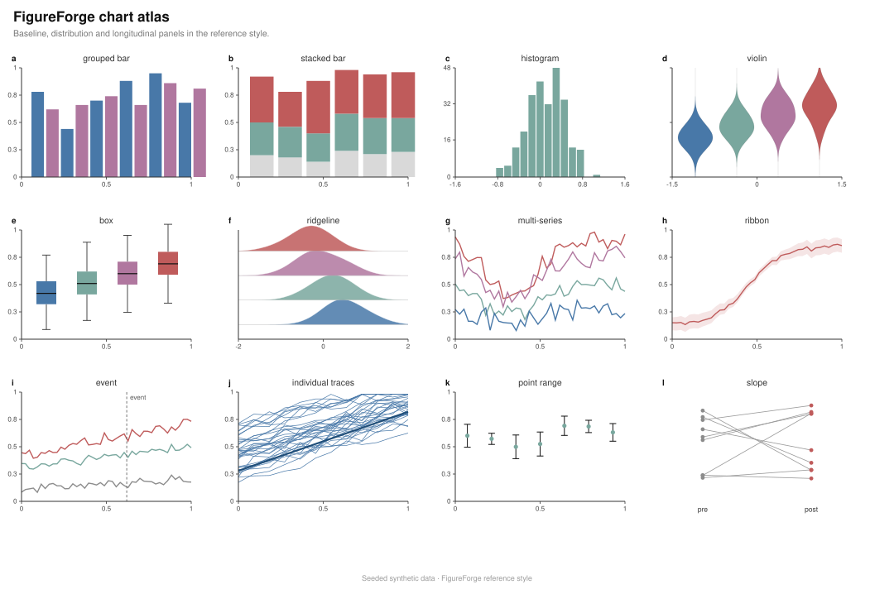
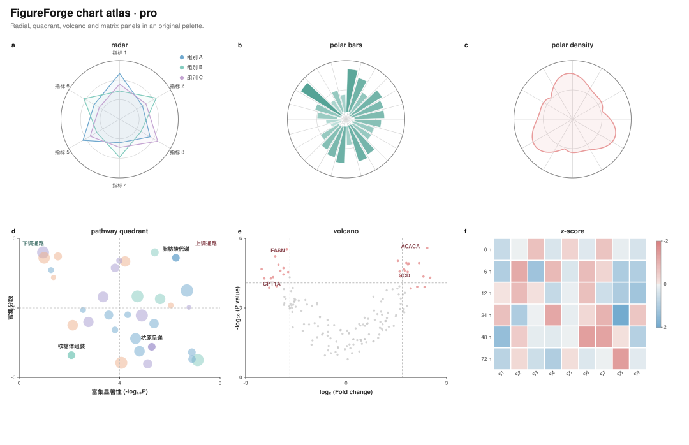
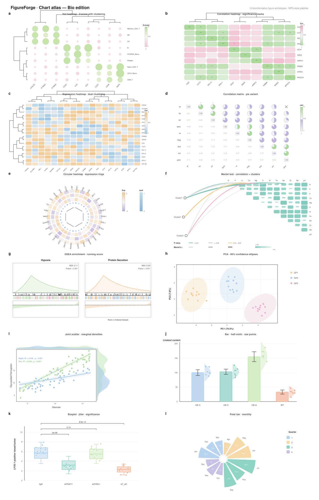
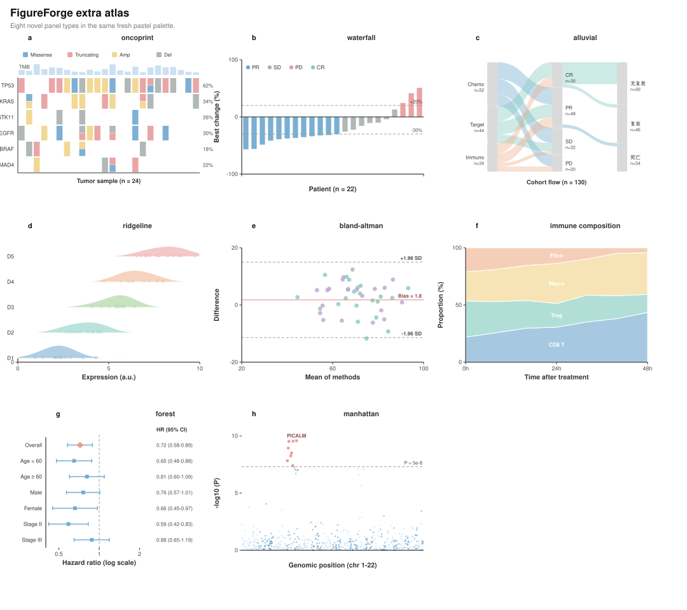
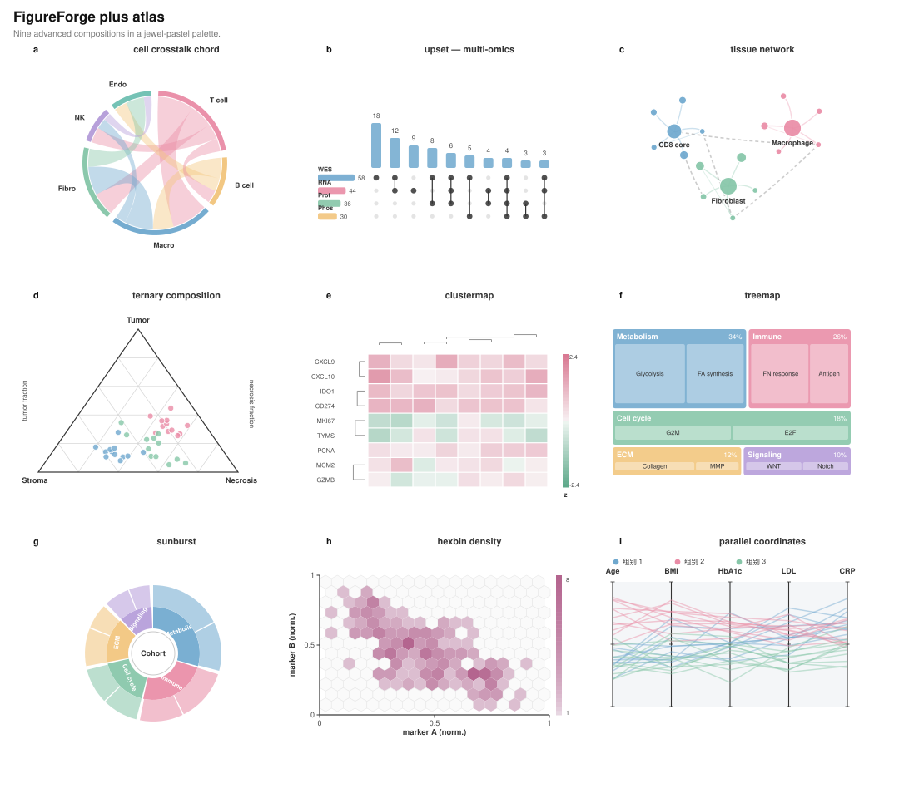
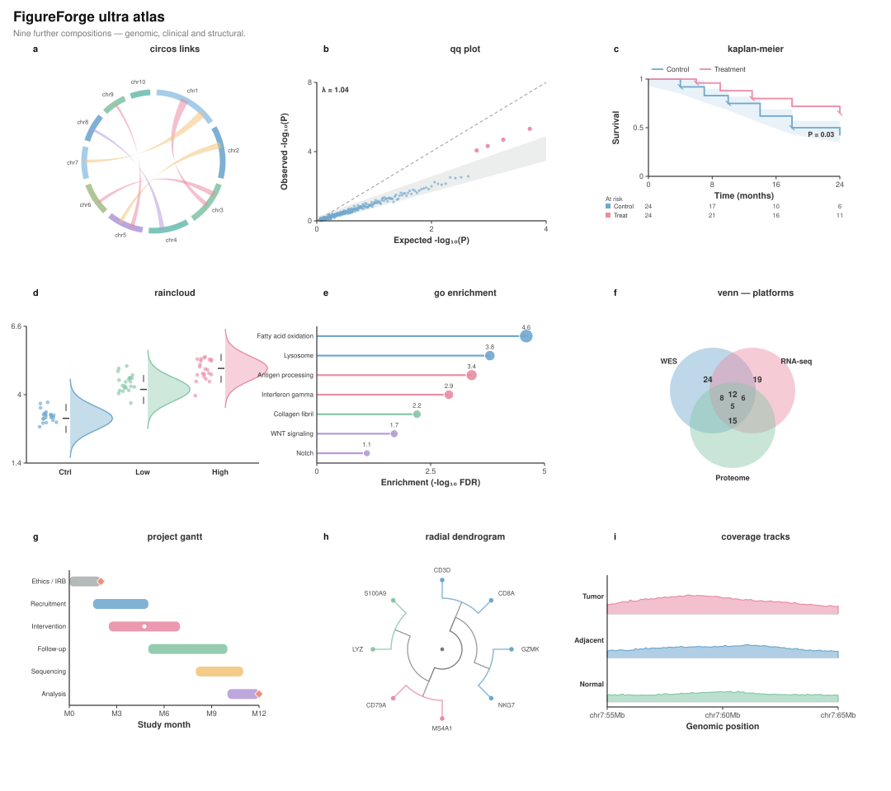
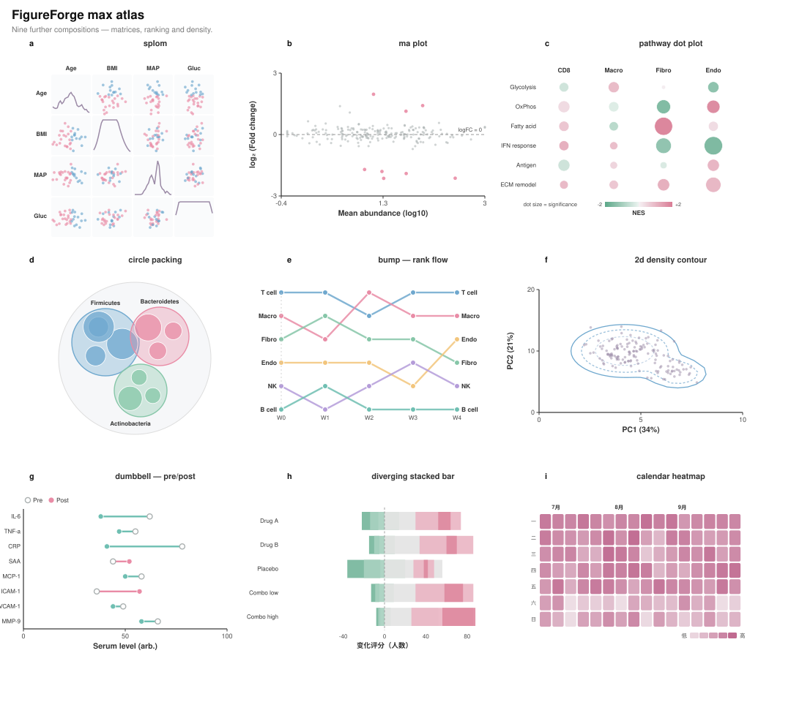
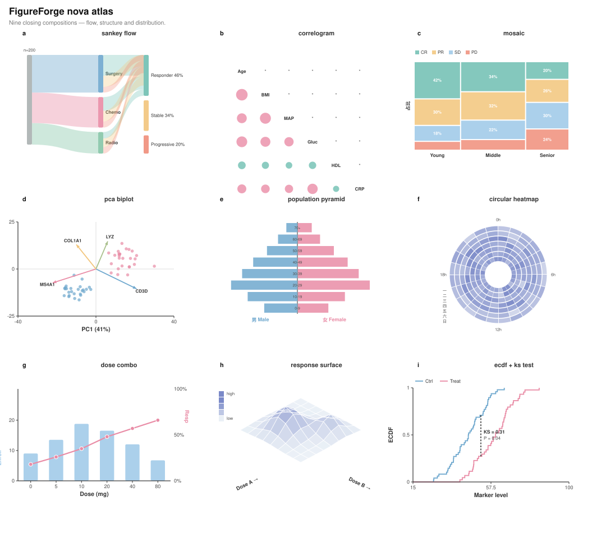
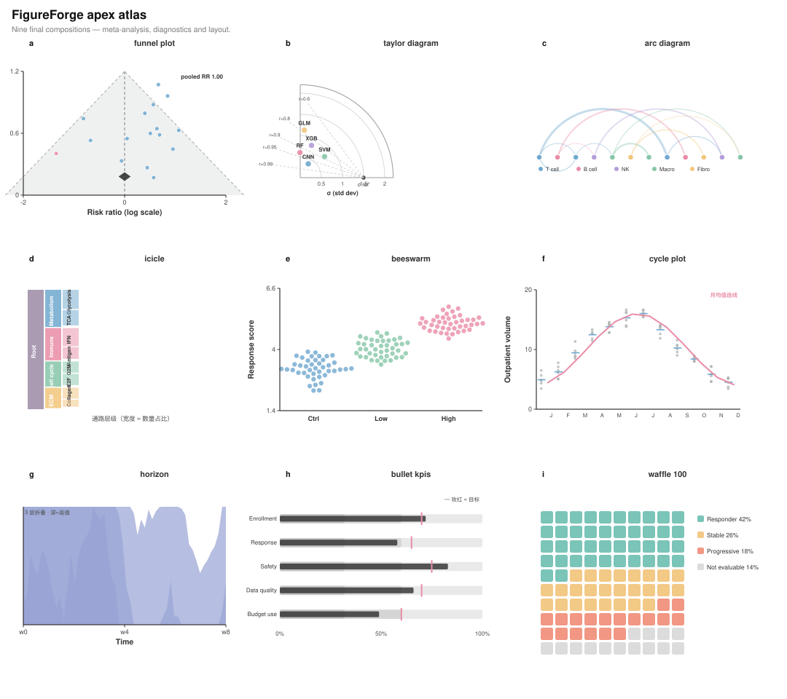

Base atlas 基础 12 格 · 分布 / 比较 / 关联

分组柱状 · 直方图 · 小提琴 · 箱线 · 趋势±CI · 飘带 · 事件线 · 个体轨迹 · 点区间 · 斜率图 · PCA · jointplot · 相关热图 · 点阵热图 · 火山 · ROC
Pro atlas 进阶 6 格 · 径向与组学

雷达 · 极坐标柱 · 极坐标密度 · 通路象限 · 火山（基因标签）· z-score 热图
Bio edition 单细胞风味 12 格

单细胞与生信高频构图（UMAP 风格散点、堆叠组成、哑铃、山脊等）
Extra atlas 临床与组学 8 格

OncoPrint · 瀑布图 · 冲积图 · 山脊 · Bland-Altman · 免疫组成流 · 森林图 · 曼哈顿
Plus atlas 高阶 9 格 · 关系与层级

弦图 · UpSet · 组织网络 · 三元相图 · 聚类热图 · 矩形树图 · 旭日图 · 六边形密度 · 平行坐标
Ultra atlas 基因组与临床 9 格

Circos 连接 · QQ 图 · KM 生存+风险表 · 雨云图 · GO 棒棒糖 · 维恩 · 甘特 · 放射树状图 · 测序覆盖度
Max atlas 矩阵与排名 9 格

散点矩阵 · MA 图 · 通路点图 · 圆填充 · 凹凸图 · 二维等高线 · 哑铃 · 发散堆叠 · 日历热图
Nova atlas 流与结构 9 格

桑基 · 相关圆环图 · 马赛克 · PCA 双标图 · 人口金字塔 · 环形热图 · 双轴组合 · 伪 3D 响应面 · ECDF+KS
Apex atlas meta 与诊断 9 格

漏斗图 · Taylor 图 · 弧线图 · 冰柱图 · 蜂群图 · 周期图 · 地平线 · 子弹图 · 华夫图